In the racing seasons, the McLaren F1 was the most common racing car. This team of racers and designers who built this magnificent car was called the Bruce McLaren Motor Racing. In 1966, the movie Grand Prix, based on racing, came out. To honor this movie, McLaren cars were painted white and green. Later, around 1971, McLaren cars were painted orange competing in the Indianapolis 500 and Can-Am series cars.
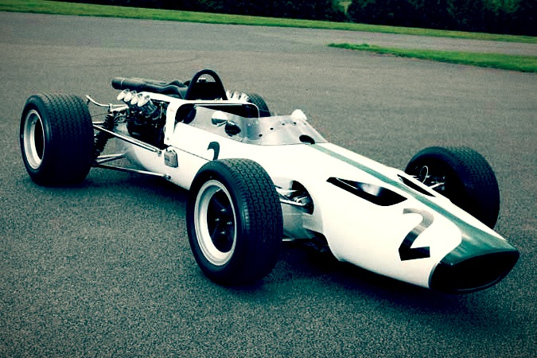 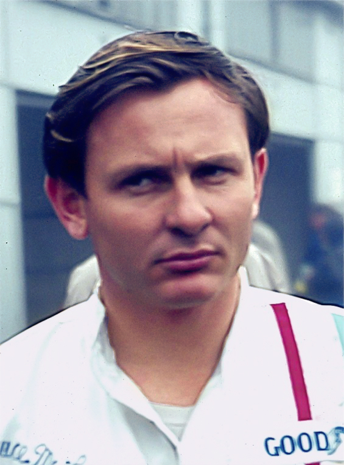Every famous car model needs sponsorship, allowing various audiences to be amazed by McLaren cars. That’s when Yardley of London Cosmetics was the first to sponsor McLaren cars. This sponsorship changed the uniform of this car, to a new dominant white color. This was both to attract the audience and to show a little of the company’as involvement in the car.
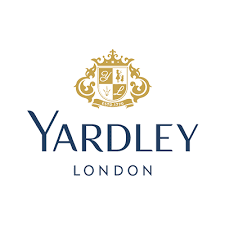After a few years, the Philip Morris company joined the sponsorship. Their idea of the car color was changed to red and white color. This color and sponsorship ran for the longest time from 1974 - 1996, however, subsidies kept adding and sooner or later, another company joined in on the sponsorship of McLaren cars.
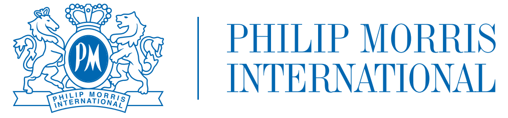
Fast-forwarding to the future, the company BAT, which sold drugs, made a global partnership with McLaren. As bad as this sounds, this was a way for the BAT to sell smoking drugs to the public. In 2022, OLX sponsored McLaren, and they had the most slick and up-to-date design on the McLaren cars. The idea was to add the iconic Fluro Papaya texture color to the car, with a flourish of pink. But it did not stop there, they also upgraded the engine. Cyberpunk engines were added to the McLaren made from the Japanese and Singapore Grand Prix.
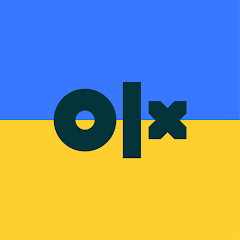 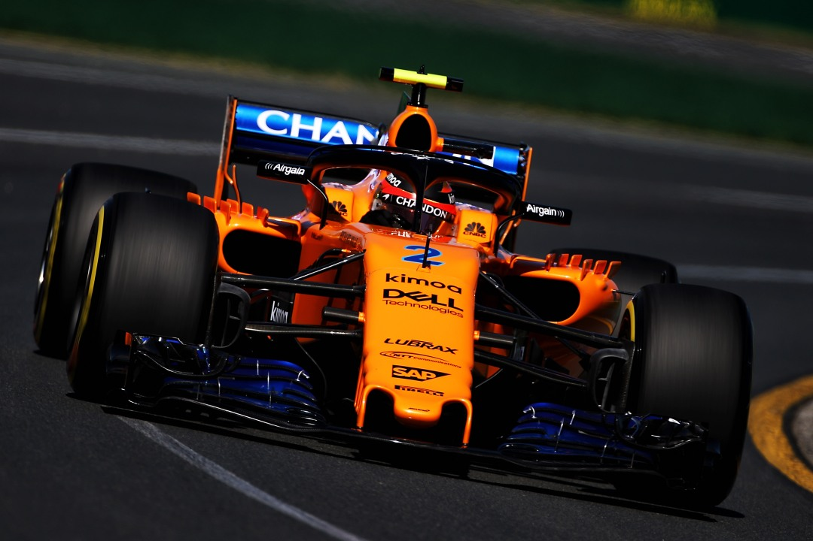 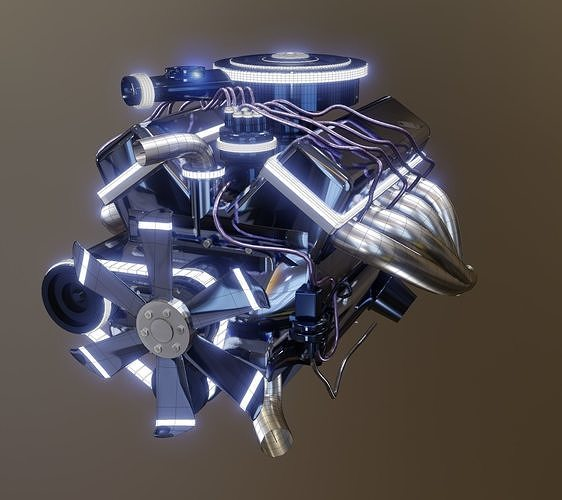From that day onward, OKX became a sponsor of McLaren Industries.
Bruce McLaren, former owner of the McLaren team finally met his fate in a car test accident in 1970. This resulted in Teddy Mayer taking over, and he had big plans for McLaren Industries. Teddy Mayer sold 50% of the McLaren company to Mansour Ojjeh, who is a French-Saudi citizen, and from that day onward, it started the joint organization of Teddy Mayer's McLaren team and Mansour Ojjeh's TAG team.
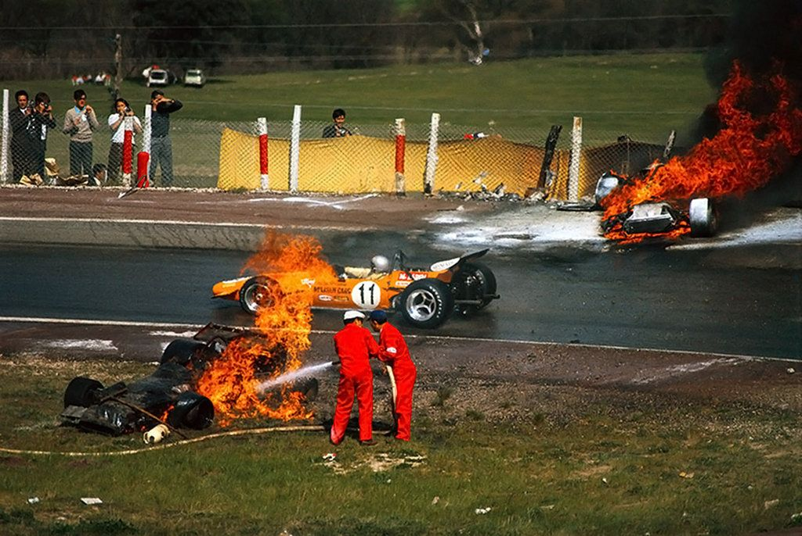 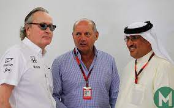Many engines were sold to the McLaren team, all from different parts of the world. This got the interest of other companies. For example, Daimler AG wanted to buy 40% of McLaren Corporation. To solve the ownership issue both the TAG team and Daimler AG got 30% of the company. These two companies took it a little further and each of them sold 15% of their share to Bahrain holding company.
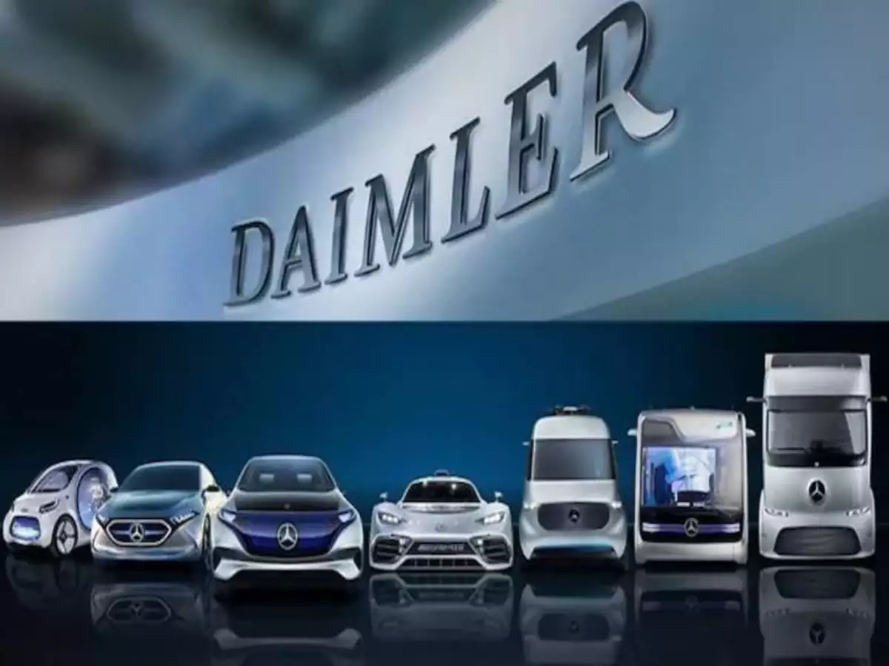Around the early years, the different owners and shareholders redesigned the McLaren industry as well as the car. There is an amazing lab stationed in England with up-to-date tech like a simulator, and a track, all of which was done by McLaren Industries and the shareholders.
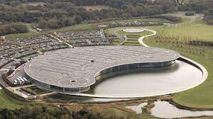